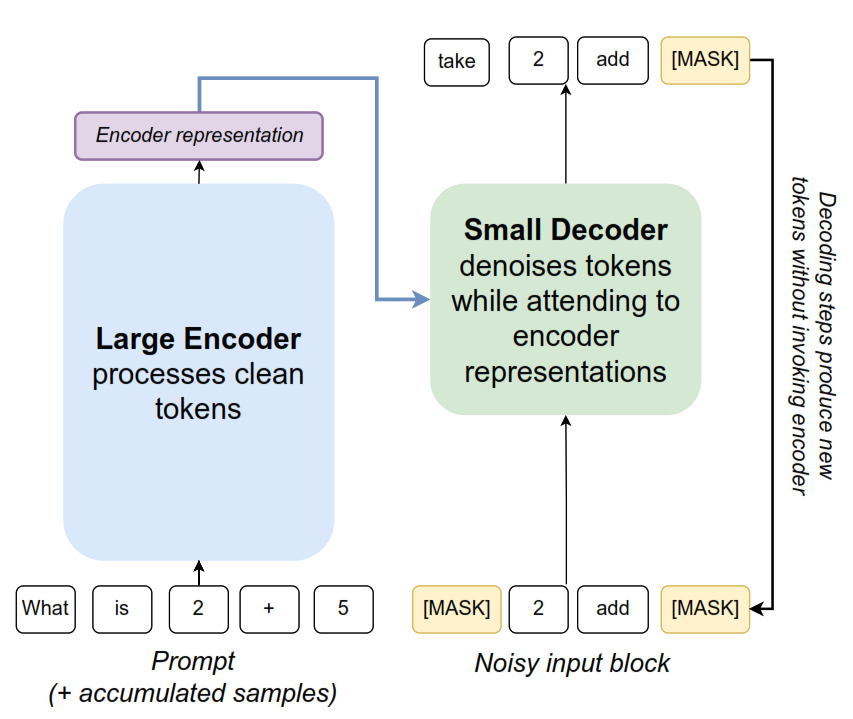

Un encoder-decoder que no genera texto palabra por palabra — parte de bloques de ruido total y los refina iterativamente hasta obtener una traducción coherente.
Mientras OPUS-MT genera un token a la vez de izquierda a derecha, E2D2 genera bloques completos en paralelo mediante absorbing diffusion — el equivalente discreto del ruido gaussiano.
block_size=4 tokens simultáneamente. Cada bloque comienza como [MASK][MASK][MASK][MASK] y se refina en múltiples pasos — no token por token.[MASK]. Denoising = predecir qué token real reemplaza cada máscara.La intuición clave: los modelos de difusión anteriores mezclaban dos tareas en un único decoder-only. E2D2 las separa en dos módulos especializados — reduciendo el costo computacional a la mitad.

Los modelos de difusión realizan dos tipos de cómputo: (1) representar tokens limpios y (2) denoising de tokens ruidosos. Los modelos decoder-only los mezclan, obligando a invocar la red completa en cada paso de denoising. E2D2 usa módulos separados — permitiendo reutilizar las representaciones del encoder en múltiples pasos baratos con el decoder.
ht = ENCODER(xt,Enc)xlogit = DECODER(zt,Dec, ht)num_steps veces por bloque (barato)ht[j] ⊕ KVDec[i]
ht ⊕ fi-1.
num_steps veces por bloque (barato).
Encoder llamado 1 vez por bloque, con KV cache acumulado.
| Modelo | FLOPs de Inferencia | Descripción |
|---|---|---|
| AR (OPUS-MT) | L · O(θ) |
Una llamada al modelo completo por cada token |
| BD3LM (decoder-only) | BT · O(θ) |
Red completa en cada paso de denoising |
| E2D2 (Ours) | B·O(φ) + BT·O(θ) |
Encoder grande O(φ) solo 1x/bloque; decoder pequeño O(θ) T veces/bloque |
E2D2 (28/4 capas) logra 24.8 BLEU a 160 tokens/s. El mejor BD3LM (16 capas) logra 24.0 BLEU a solo 102.4 tokens/s. E2D2 extiende el Pareto frontier: más calidad y más throughput simultáneamente.
Desde texto alemán crudo hasta traducción en inglés. El pipeline completo pasa por tokenización, codificación tensorial y generación por difusión bloque a bloque.
[1, L_src] · L_src = longitud con tokens especiales
block_size |
4 | Tokens generados en paralelo por bloque |
num_steps |
4 | Iteraciones de denoising por bloque |
max_new_tokens |
64–96 | Límite superior de la traducción |
El cross-attention es el puente entre lo que el encoder entendió del alemán y lo que el decoder está construyendo en inglés. Cada componente tiene un rol preciso — y en E2D2 hay diferencias fundamentales respecto a un Transformer clásico.
block_size=4 tokens que están siendo refinados ahora mismo.
Estos tokens están en estado ruidoso / enmascarado.num_steps veces por bloque.
tie_enc_dec_weights=False.
[batch, block_size, d_v] —
un vector enriquecido con contexto alemán para cada uno de los
4 tokens del bloque activo.
Esto ocurre num_steps=4 veces antes de que el bloque quede fijo.
h* = tokens del encoder (origen de K,V — cross-attention).
Columnas z* = tokens del bloque activo (self-attention intra-bloque sin restricción).
| Aspecto | OPUS-MT (Autoregresivo) | E2D2 (Difusión Discreta) |
|---|---|---|
| Origen de Q | Último token generado (definitivo) | Bloque de block_size tokens ruidosos |
| Estado de Q | Certeza total — no cambia | Incertidumbre → se refina num_steps veces |
| Origen de K, V | Encoder (representaciones limpias) | Encoder 28 capas bidireccional |
| Veces que se ejecuta cross-attn | 1 vez por token | num_steps × n_bloques veces |
| Máscara de atención | Triangular inferior (causal) | Block-causal + intra-bloque libre |
| Pesos encoder ↔ decoder | Depende del modelo | No compartidos — tie_enc_dec=False |
use_cache=True:
El encoder se ejecuta una sola vez para toda la oración. Las representaciones H_encoder (K y V) se reutilizan en cada bloque y en cada paso de denoising — esencial para la eficiencia computacional del Algoritmo 1.
Cada bloque de block_size=4 tokens comienza completamente enmascarado.
El decoder aplica num_steps=4 iteraciones de cross-attention + self-attention
hasta que los 4 tokens quedan fijados. Explora el proceso paso a paso:
[MASK] como ruido discreto. Esto se llama
absorbing diffusion.
[MASK]
específicas, no a través de toda la secuencia.
Evaluación sobre WMT14 de-en. Ablation study en 30 ejemplos para sensibilidad de parámetros; evaluación extendida en 150 ejemplos para comparación principal.
| Configuración E2D2 | BLEU ↑ | chrF ↑ | Tiempo prom. | Tokens/s ↑ | Rep. bigrama ↓ |
|---|---|---|---|---|---|
| b2/s2 con cache | 0.00 | 0.31 | 0.140 s | 15.75 | 0.033 |
| b4/s4 con cache ✓ oficial | 17.85 | 50.00 | 1.066 s | 37.24 | 0.092 |
| b8/s8 con cache | 10.13 | 45.65 | 0.950 s | 71.03 | 0.240 |
La configuración use_cache=False falló:
RuntimeError: tensor a (4) != tensor b (0).
El cache es parte integral del diseño del checkpoint, no solo una optimización.
| Modelo / Configuración | BLEU ↑ | chrF ↑ | Tiempo prom. | Tokens/s ↑ | Rep. bigrama ↓ |
|---|---|---|---|---|---|
| E2D2 b4/s4 cache (oficial) | 16.53 | 49.66 | 0.706 s | 50.32 | 0.077 |
| OPUS-MT autoregresivo | 25.02 | 54.09 | 0.189 s | 144.68 | 0.005 |
OPUS-MT supera a E2D2 en esta evaluación. Esto es esperado y no invalida el proyecto. El objetivo fue analizar el paradigma de difusión discreta, no ganar un benchmark. La comparación es ilustrativa: muestra diferencias de paradigma, no de calidad absoluta.
block_size=8 (rep. bigramas: 24%).
Causa: insuficientes pasos de refinamiento para bloques grandes.
block_size=2, los bloques no tienen ventana temporal suficiente
(BLEU ≈ 0).
Consistente con los límites teóricos de difusión discreta con pocos pasos de refinamiento.